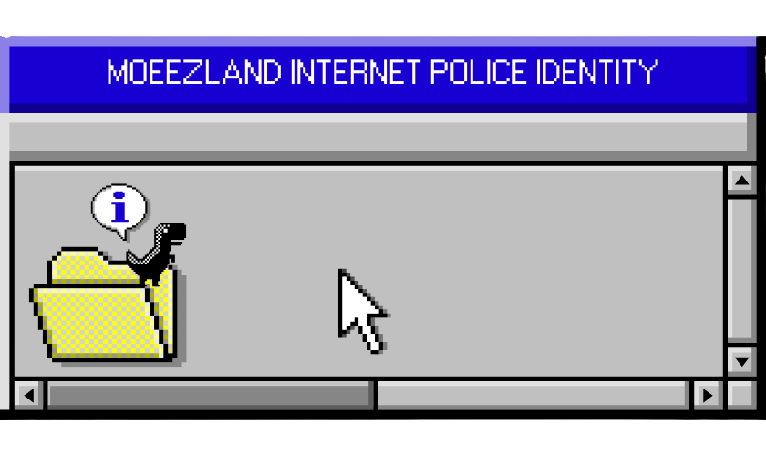
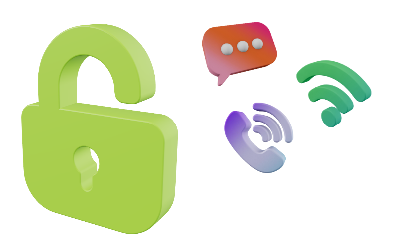

Safeguarding Moeezland's Digital World
The Moeezland Internet Police is the official digital security authority of the Hereditary Monarchy of Moeezland. Formed to protect the nation's online presence since 2023, it stands as the guardian of safety, order, and technological integrity across the Moeezland cyberspace.
Our mission is to ensure that every digital asset belonging to Moeezland remains safe, well-protected, and monitored. The Moeezland Internet Police oversees online infrastructure, handles cybersecurity protocols, responds to digital threats, and maintains internet order within the micronation.

• Monitor national digital platforms
• Secure official websites and online portals
• Prevent unauthorized access or cyber‑attacks
• Develop and maintain cybersecurity policies
• Ensure safe communication across Moeezland systems